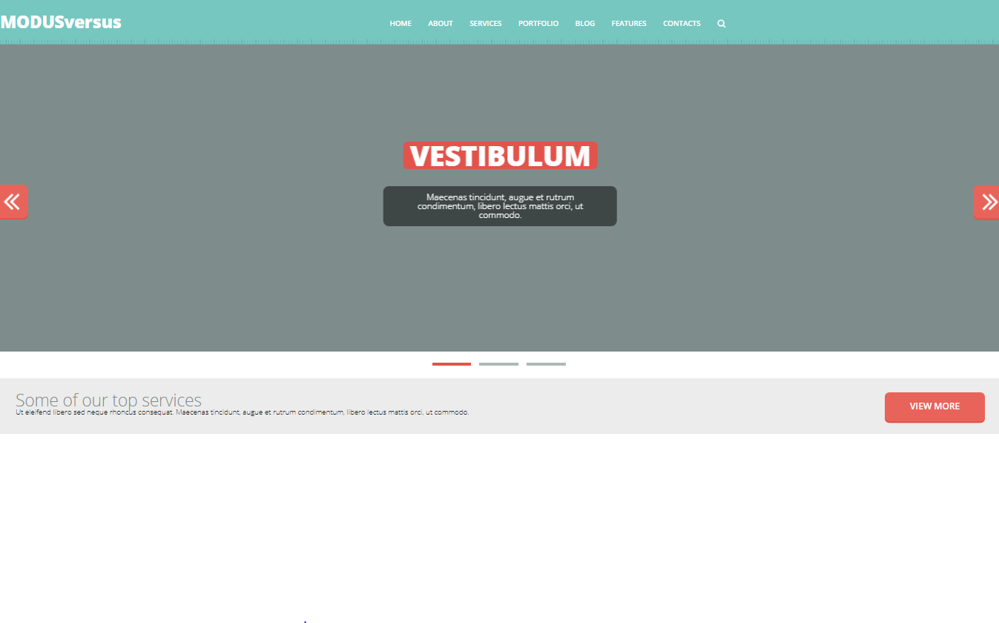
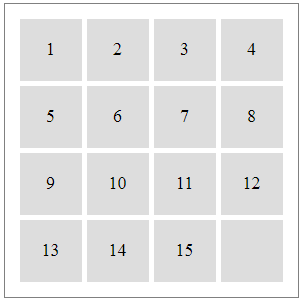
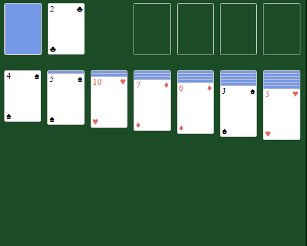
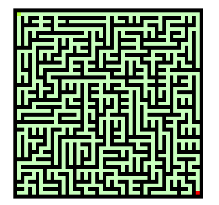

01
Верстка

Создание сайта ModusVersus по макету с использованием Flexbox
02
Пятнашки

Классическая игра Пятнашки. Нужно упорядочить числа по возростанию нажимая на соседние значения от пустой ячейки
03
Пасьянс "Косынка"

Цель игры состоит в том, чтобы разложить все карты в четыре стопки по возрастанию,
начиная с туза так, чтобы карты одной масти находились в одной стопке.
04
Лабиринт

Генерация лабиринта алгоритмом "Sidewinder" и поиск пути по данному лабиринту с помощью алгоритма Ли